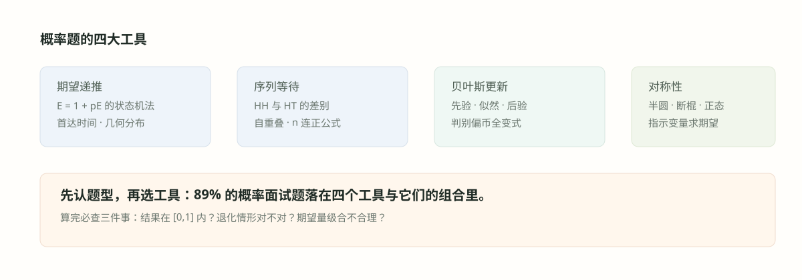

#023. 概率十：杂题精选

#学习目标：收尾五件套
源题库的概率板块末尾散落着一批「不好归类但高频」的题：环形传递枪（约瑟夫环）、给定承重的装箱计数（子集和动态规划）、100! 的尾零（勒让德公式）、\(x^{x^{x^{\cdots}}}=2\)（不动点与收敛域）、以及「\(x=y\) 出现 47% 能否预测」（相关与巧合的边界）。它们共同点是：表面考点互不相干，底层动作却都是「找结构、设状态、写递推」——这正是概率十章反复训练的肌肉。
本章每道题都会给出完整的推导与检验，并把它们挂回前九章的工具树：约瑟夫环呼应 014 章的递推思想、子集和呼应 033 章的编程模板、幂塔呼应 022 章的不动点、二项相关则同时连回 019 章的显著性与 026 章的回归。读完本章，概率主线 88 道源题全部收口。
约瑟夫环 \(J(2n)=2J(n)-1\)、\(J(2n+1)=2J(n)+1\)：一轮过后问题规模减半、位置重编号。
幂塔 \(t=x^t\) 的解只是候选，必须验证迭代收敛：\(x\in[e^{-e},\,e^{1/e}]\)。
子集和用 0/1 背包计数；尾零用勒让德公式数 5 的幂；相关强弱用 \(R^2\) 与显著性量化。
- 遇到「传递枪绕圈」「循环报数」类题，我能立刻识别为约瑟夫问题并写出递推。
#知识点：收尾工具箱
约瑟夫问题（Josephus problem）。\(n\) 人围圈，从 1 号开始每数到 2 就淘汰下一人，求幸存者位置 \(J(n)\)。标准解法是「一轮过后重编号」：\(n\) 为偶数时第一轮恰好淘汰全部偶数号，剩下 \(\{1,3,\dots,2n-1\}\)，枪回到 1 号，子问题的位置 \(i\) 对应原位置 \(2i-1\)；\(n\) 为奇数时第一轮淘汰到 \(2n-2\) 后，\(2n\) 号淘汰 1 号，剩下 \(\{3,5,\dots,2n-1\}\)，对应 \(2i+1\)。
约瑟夫递推：\(J(1)=1\)，\(J(2n)=2J(n)-1\)，\(J(2n+1)=2J(n)+1\)。怎么读：规模减半，答案由子问题线性变换而来。
闭式解：把 \(n\) 写成 \(n=2^m+L\)（\(0\le L\lt 2^m\)），则 \(J(n)=2L+1\)。怎么读：把 \(n\) 的二进制最高位砍掉、其余左移一位再加一，等价于把首位的 1 挪到末位。
勒让德公式：\(n!\) 中素数 \(p\) 的幂次为 \(\sum_{i\ge1}\lfloor n/p^i\rfloor\)。尾零数 \(=\min(2\text{ 的个数},\,5\text{ 的个数})=5\) 的幂次。
幂塔收敛域：迭代 \(t_{k+1}=x^{t_k}\) 收敛当且仅当 \(x\in[e^{-e},\,e^{1/e}]\approx[0.0660,\,1.4447]\)；极限是方程 \(t=x^t\) 的稳定不动点（\(|\frac{d}{dt}x^t|=|t\ln x|\le1\)）。
子集和计数（subset-sum counting）。给定包裹重量与容量，统计「总重不超过容量」的子集数。暴力枚举 \(2^n\) 不可行，动态规划以容量为状态维度：\(dp[j]\)＝「恰好装满 \(j\)」的方案数，逐件包裹、容量倒序更新——这正是 0/1 背包的计数版，与 033 章的前缀和/背包模板同源。相关的量化：两个变量的「同值率」偏离独立基准多少，决定可预测性上限 \(R^2=\rho^2\)，这一步把 P32 变成 019 章检验与 026 章回归的联合应用题。
「设塔值为 \(t\)、解 \(t=x^t\)」只给出候选点；迭代 \(t_{k+1}=g(t_k)\) 的真实极限还要求不动点稳定（导数绝对值不超过 1），并且初值在吸引域内。幂塔题的 4 就是这样一个「满足方程但从不被迭代到达」的陷阱解。同样的审慎适用于 022 章的灭绝概率：方程的根不止一个，取哪个由「迭代从哪里出发」决定。
#例题详解 I：约瑟夫环
例题 1（源题 P22）：100 人围成一圈，1 号持枪打死 2 号并把枪传给 3 号，3 号打死 4 号传给 5 号……如此直到只剩一人。幸存者最初站在几号位？
建模。标准的步长 2 约瑟夫问题：从 1 号开始，每个持枪者淘汰下一个存活者。设 \(J(n)\) 为 \(n\) 人问题的幸存者编号（编号从 1 开始、从 1 号起数）。
推导。建立两条递推。\(n=2m\) 偶数：第一轮淘汰 \(2,4,\dots,2m\) 全部偶数号，剩 \(m\) 人 \(\{1,3,\dots,2m-1\}\)，枪回到 1 号——与 \(m\) 人问题同构，子问题编号 \(i\) 对应原编号 \(2i-1\)，故 \(J(2m)=2J(m)-1\)。\(n=2m+1\) 奇数：第一轮先由奇数号持枪者淘汰全部偶数号 \(2,4,\dots,2m\)（共 \(m\) 人），随后枪到 \(2m+1\) 号、它淘汰 1 号，剩 \(\{3,5,\dots,2m+1\}\)，从 3 号重新对应子问题编号 1，即 \(J(2m+1)=2J(m)+1\)。联立：
闭式：写 \(n=2^m+L\)（\(0\le L\lt 2^m\)），则 \(J(n)=2L+1\)。对 \(n=100=64+36\)：
检验。链式递推逐层核对：\(J(3)=3\)（三人：1 杀 2，3 杀 1）→ \(J(6)=2J(3)-1=5\) → \(J(12)=2J(6)-1=9\) → \(J(25)=2J(12)+1=19\) → \(J(50)=2J(25)-1=37\) → \(J(100)=2J(50)-1=73\)，与闭式一致 ✓。小情形手算：\(J(5)=3\)（杀 2、4、1、5，剩 3）✓。二进制口径：\(100=(1100100)_2\)，把最高位的 1 移到末尾得 \((1001001)_2=73\) ✓。
面试怎么讲。「先算小情形找规律，再写奇偶递推，最后给闭式 \(J(n)=2(n-2^{\lfloor\log_2 n\rfloor})+1\)；100 = 64 + 36，幸存者 73 号。递推的洞见是一轮过后问题规模减半、旧编号是新编号的仿射函数。」
#例题详解 II：装箱与子集和
例题 2（源题 P20）：已知箱子的承重上限 \(W\) 与 \(n\) 件包裹的重量，求把若干件包裹放入箱子（总重不超过 \(W\)）的装法数。
建模。「装法」＝重量之和不超过 \(W\) 的包裹子集。这是子集和（subset-sum）的计数版：与「能否恰好装满」的判定版只差最后一步统计口径。先约定：空集（一件不放）计为 1 种装法；若题意要求至少装一件，答案减 1。
推导。动态规划：设 \(dp[j]\)＝「已处理件中，总重恰为 \(j\)」的子集数，初始 \(dp[0]=1\)（空集）、其余为 0。逐件包裹 \(w_i\) 更新，容量维度倒序扫（保证每件只用一次）：
答案 \(\sum_{j=0}^{W}dp[j]\)。复杂度 \(O(nW)\)、空间 \(O(W)\)。
检验。小例全枚举：重量 \(\{2,3,5,7\}\)、\(W=7\)。16 个子集的总重：0、2、3、5、7、5（2+3）、7（2+5）、9、8、10、12、10、12、14、15、17；不超过 7 的恰 7 个（\(\varnothing\)、\(\{2\}\)、\(\{3\}\)、\(\{5\}\)、\(\{7\}\)、\(\{2,3\}\)、\(\{2,5\}\)）。DP 复算：处理 2 后 dp[2]=1；处理 3 后 dp[2]=dp[3]=1... 终态 \(dp[0]{=}1,dp[2]{=}1,dp[3]{=}1,dp[5]{=}2,dp[7]{=}2\)，求和 7 ✓。边界：全部重量大于 \(W\) 时答案为 1（只有空集）；重量为 0 的包裹会以 2 倍复制方案数（放或不放都不超重），实现时应留意。
面试怎么讲。「这是 0/1 背包计数：状态是『恰好装满 \(j\)』的方案数，倒序更新防重复选取，最后对 \(j\le W\) 求和。若面试官要判定版『恰好装满 \(W\)』，答案就是 \(dp[W]\)；若要连续容量上界的前缀统计，把求和换成前缀和（见 033 章）。」
#例题详解 III：尾零与幂塔
例题 3（源题 P26 与 P27 合讲）：\(100!\) 的末尾有多少个零？求使无穷幂塔 \(x^{x^{x^{\cdots}}}=2\) 的正数 \(x\)。
建模（尾零）。末尾的每个零来自一个因子 \(10=2\times5\)；\(100!\) 中 2 的幂次远多于 5，所以尾零数 \(=5\) 的幂次，用勒让德公式（Legendre's formula）数。
推导（尾零）。5 的倍数每个贡献至少一个 5，25 的倍数再贡献一个，125 以上超出范围：
检验（尾零）。2 的幂次 \(\lfloor100/2\rfloor+\lfloor100/4\rfloor+\lfloor100/8\rfloor+\cdots=50+25+12+6+3+1=97\gg24\)，瓶颈确在 5 ✓。量级：\(100!\approx9.3\times10^{157}\) 是 158 位数字，带 24 个尾零，占约 15%，与「5 的密度约 1/5」的直觉一致。
推导（幂塔）。设塔值 \(t\) 满足 \(t=x^t\)（在塔前面再添一层 \(x\) 不改变其值）。代入 \(t=2\)：\(2=x^2\)，得候选 \(x=\sqrt2\approx1.4142\)。收敛性检查：迭代 \(t_{k+1}=x^{t_k}\) 收敛的充要条件是 \(x\in[e^{-e},\,e^{1/e}]\approx[0.0660,\,1.4447]\)；\(\sqrt2\lt e^{1/e}\approx1.4447\)，且在稳定不动点 \(t=2\) 处 \(|t\ln x|=2\ln\sqrt2=\ln2\approx0.693\lt1\)，迭代收敛，塔值确为 2。数值验证：从 \(t_0=1\) 起迭代 \(1\to1.414\to1.632\to1.760\to\cdots\to2\) ✓。
检验（幂塔，经典陷阱）。若题目改成「塔值等于 4」，同样的代数给 \(x=4^{1/4}=\sqrt2\)——同一个 \(x\)，两个「解」。矛盾的解释：\(t=4\) 也满足 \(t=(\sqrt2)^t\)，但它是不稳定不动点（\(|4\ln\sqrt2|=2\ln2\approx1.386\gt1\)），迭代永远不会到达它；无穷幂塔按迭代极限定义，取值为 2 而非 4。这说明「解方程」只是必要步骤，「验证收敛」才是完整答案。
面试怎么讲。「尾零 24 个：勒让德公式数 5 的幂，20+4。幂塔 \(x=\sqrt2\)，但我会主动加上收敛域检查 \(x\in[e^{-e},e^{1/e}]\)，并点破『塔值 4 也解出 \(\sqrt2\)』的陷阱——4 不稳定、不可达。这两题都是『代数给出候选、结构给出裁决』的范例。」
#例题详解 IV：二变量的可预测性
例题 4（源题 P32）：\(x,y\) 都服从二项分布（\(p=0.5\)）。已知 \(x=y\) 出现了 47% 的时间，能否用 \(x\) 预测 \(y\)？
建模。分两层。第一层：若 \(x,y\) 独立同分布 \(\mathrm{Bin}(n,\tfrac12)\)，同值率是被分布完全决定的量；第二层：观测到 47%，与独立基准的偏离度决定「相关性」，进而决定可预测性。先算基准。
推导（独立基准）。\(P(x=y)=\sum_k\binom nk^2\Big/4^n\)。由范德蒙德恒等式 \(\sum_k\binom nk^2=\binom{2n}{n}\)，故
数值：\(n=1\) 恰 \(\tfrac12\)；\(n=2\) 为 \(6/16=37.5\%\)；\(n=50\) 约 7.96%（近似式 7.98%，相当准）。
推导（解读 47%）。观测值 47% 最贴近 \(n=1\)（伯努利 0/1）情形的基准 50%。独立伯努利的同值率恰为一半，47% 意味着同值率比独立基准低 3 个百分点。对两个公平的 0/1 变量，相关系数与同值率有一一对应：\(\rho=2P(x=y)-1=2\times0.47-1=-0.06\)，即微弱负相关（也可能是噪声，见下）。
推导（可预测性）。用 \(x\) 预测 \(y\) 的天花板由 \(R^2=\rho^2\) 给出（线性回归框架见 026 章）：\(\rho^2\approx0.0036\)，即 \(x\) 至多解释 \(y\) 变异的 0.36%。若非要说策略，最优猜测是「\(y=1-x\)」（反着猜），胜率 53%——比瞎猜（50%）只高 3 个点。这个优势是否真实存在还取决于样本量 \(T\)：检验「同值率 47% 对 50%」需 \(z=\frac{0.03}{0.5/\sqrt T}=0.06\sqrt T\gt1.96\)，即 \(T\gt(1.96/0.06)^2\approx1067\) 对观测（019 章的检验框架）。样本不足时，47% 更可能是巧合。
检验。一致性：同值率低于一半对应负相关、反着猜，方向自洽 ✓；界：\(P(x=y)\in[0,1]\) 对应 \(\rho\in[-1,1]\)，47% 落在中间偏负 ✓；量级：\(|\rho|=0.06\) 属「几乎不相关」，任何声称「强预测」的结论都与 \(R^2=0.36\%\) 矛盾。
面试怎么讲。「先算独立基准：同值率 \(=\binom{2n}{n}/4^n\)，伯努利情形是 50%；47% 偏离基准 3 个点，对应 \(\rho=-0.06\)、\(R^2\approx0.4\%\)——预测价值几乎为零。再补统计审慎：需要约 1067 对观测才能确认这 3 个点不是噪声。结论：47% 的重合更像弱相关或巧合，不足以支撑预测策略。」
#跨章收尾与交叉引用
概率板块还有几道源题按知识归属放在了其他章节，此处统一登记：P29（本金 1 美元、每局翻倍或清零的重复博弈）本质是下注尺度与破产概率问题，完整解答在 025 章（博弈二：破产、复注与下注尺度）；P54（掷公平硬币猜正反的年度结算：期望、标准差与两年亏钱概率）是公平随机游走口径，同样在 025 章；P48（夏普比率 1 的策略四年亏钱概率）与 P80（剔除零收益日对夏普比率的影响）属于绩效度量口径，集中在 037 章（金融一：夏普比率专题）；P2（蛋糕巧克力豆要撒多少颗）与 019 章例题 5 的泊松稀有事件计数是同一台机器，解答附于该例。至此，源题库概率板块 88 题全部落位：014–018章的硬币与递推主线、019章的检验、020章的对称、021章的期望、022章的过程与本章的杂题，共十章。
后续章节与概率主线的接口也预告一下：024 章的博弈专题大量复用期望与条件概率（糖果矩阵博弈 P19 即在其列）；026 章的回归会把本章 \(R^2=\rho^2\) 的说法升级为完整的最小二乘理论；029 章的多元高斯则把 020 章的 \(\arcsin\) 公式与 022 章的泊松分裂收入统计语境。概率不是孤岛，它是后面一切的地基。
#误区与边界
约瑟夫：只记答案 \(2L+1\) 但忘了奇偶递推的推导，面试官一改步长（数到 3 淘汰）就失灵——步长 3 时应回到「重编号」的第一性做法。子集和：正序更新容量会把一件包裹用多次（变成完全背包计数）；重量含零时方案数被 2 倍复制。尾零：数成 2 的幂（97）或忘算 25 的二次贡献（只报 20）。幂塔：解出 \(\sqrt2\) 后不做收敛检查，或被「塔值 4」的陷阱解带偏。二项相关：把 47% 直接读成「相关系数 47%」，或忽略样本量宣称能预测——正确换算是 \(\rho=2P(x{=}y)-1\)，且需显著性支持。
边界条件与变式：约瑟夫步长 \(k\) 的一般情形没有简洁闭式，递推 \(J(n)=(J(n-1)+k)\bmod n\) 是通用出口；子集和当 \(W\) 巨大时需转向「按重量排序 + 折半枚举」（meet in the middle，见 009 章组合枚举）；幂塔在 \(x\lt e^{-e}\) 时迭代不收敛而进入二周期振荡，塔值无定义；二项相关若 \(n\) 较大（如 \(n=50\)），独立同值率基准只有 8%，观测 47% 接近基准的六倍，就意味着强相关——同值率的意义依赖 \(n\)，先定基准再谈偏离，这是本题最容易被忽视的一层。
#检查清单
- 我能推导约瑟夫递推 \(J(2m)=2J(m)-1\)、\(J(2m+1)=2J(m)+1\)，并用闭式秒答 \(J(100)=73\)。
- 我会用 0/1 背包计数解子集和（倒序更新、对 \(j\le W\) 求和），并说清与判定版的差别。
- 我能用勒让德公式算尾零（100! 有 24 个），并解释为什么 5 是瓶颈。
- 我能解幂塔方程 \(t=x^t\) 得 \(x=\sqrt2\)，并完成收敛域 \([e^{-e},e^{1/e}]\) 与稳定性的验证。
- 我能说明「塔值 4 也给出 \(\sqrt2\)」为何是陷阱：不稳定不动点不可达。
- 我能算独立二项的同值率基准 \(\binom{2n}{n}/4^n\approx1/\sqrt{\pi n}\)，并换算 \(\rho=2P(x{=}y)-1\)。
- 我能把 47% 的同值率翻译成 \(\rho=-0.06\)、\(R^2\approx0.4\%\)、需约 1067 对观测才显著，并给出「几乎不可预测」的结论。
- 我知道 P29、P54 归入 025 章，P48、P80 归入 037 章，P2 与 019 章泊松例题同型，并能说清归类理由。